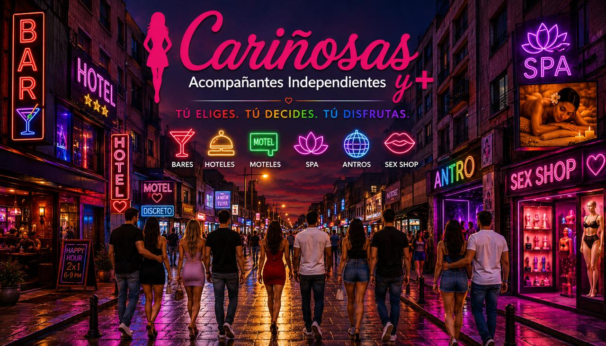

34 categorías con las fotos que enviaste (ZIP WhatsApp).
Cada tarjeta usa un mini-banner fotográfico lateral (~36%), sin iconos ni círculos.
Mismo tamaño de tarjeta que el picker de producción.
Adultos · propuesta visual
Adultos y Entretenimiento para Adultos
34 categorías · fotos de referencia integradas

Solo vista de prueba · no afecta el sitio en producción. ← Volver al sitio